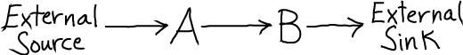
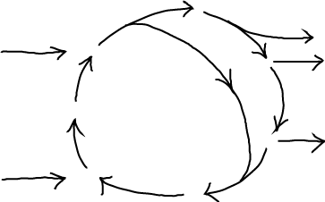

A steady state consists of one or more inputs and one or more outputs, with each component unchanging in time.

\begin{equation} \label{ss-schematic} \frac{ d \conc{A} }{ dt } = 0 \hspace{1cm} \frac{ d \conc{B} }{ dt } = 0 \end{equation}A more typical (and complex) case includes multiple inputs/outputs and an internal cycle

A standard MM process models conversion of a substrate (S) to a product (P), catalyzed by an enzyme (E) after formation of a bound-but-uncatalyzed complex (ES).

The simple MM model can also be viewed as a cycle because the enzyme E is re-used. Blue arrows indicate steady net flows.

A steady state will occur if P is removed at the same rate as S is added. Mathematically, for steady state, we set the time derivative of the ES complex to zero. \begin{equation} \label{michaelis} \frac{d\conc{ES}}{dt} = \conc{E}\conc{S} \,\kmmon - \conc{ES} \, \kmmoff - \conc{ES} \, \kcat = 0 \end{equation}
The result yields what looks like a dissociation constant in terms of the steady-state (SS) concentrations:
\begin{equation} \label{km} \frac{ \conc{E}^{\ss} \conc{S}^{\ss} }{ \conc{ES}^{\ss} } = \frac{ \kmmoff + \kcat }{ \kmmon } \equiv K_M \end{equation}In words, in the steady state, the ratio of concentrations on the left assumes the constant value given by the particular ratio of rate constants in the middle. The effective "equilibrium" constant $K_M$ is conventionally defined but not strictly needed.
The basic steady state result \eqref{km} can be used to calculate other quantities of interest, such as the overall rate of product production
\begin{equation} \label{mm-product} \kcat \conc{ES}^{\ss} = \conc{E}^{\ss} \conc{S}^{\ss} \frac{\kcat}{K_M} \end{equation} now given in terms of the steady-state E and S concentrations, which should be known.All molecular processes are reversible, so any model with a uni-directional arrow is necesarily approximate: see the discussion of cycles. The full MM cycle, allowing for reverse events and permitting only single-step processes, is subjected to a (more complicated) steady-state analysis in an advanced section.